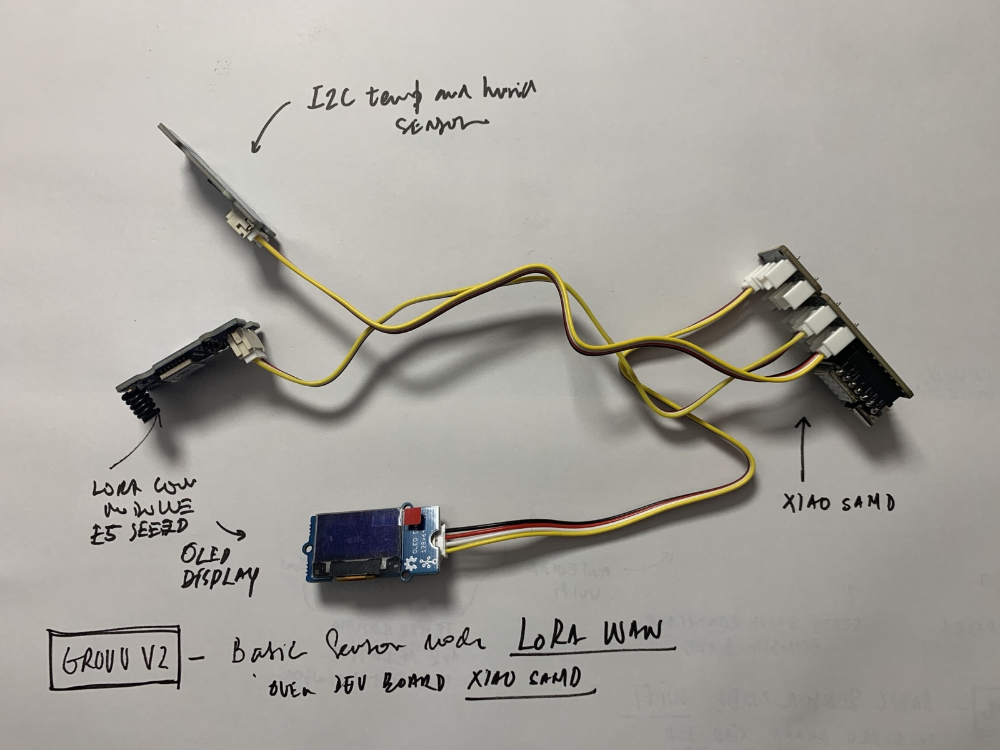

Long-range, low-power sensing over LoRaWAN and The Things Network — the companion to the WiFi track, for sites WiFi can't reach. The basic LoRaWAN node — a XIAO + Wio-E5 publishing SHT4x readings to TTN — is complete and replicable; this page documents it alongside the architecture, hardware options and the TTN → MQTT bridge. The V3 water node, WellBouy, extends the same track.

A completed, replicable long-range node and the track around it: a XIAO + Wio-E5 (LoRa-E5) that joins The Things Network over EU868 and uplinks SHT4x temperature/humidity, with an OLED and downlink control. It reaches the same server stack as the WiFi nodes, for wells, fields and remote sites beyond a network.
The uplink path off-site, into the shared stack.
WiFi is fine where a router reaches; LoRaWAN covers everything beyond it, on power budgets WiFi can't touch. The radio is chosen per node.
Discrete build, OTAA. Most control, most wiring.
AT-command module over UART. The reference build on this page.
RadioLib, deep-sleep friendly. The water node's stack.
A Grove Wio-E5 (LoRa-E5) driven over UART with AT commands, on a Seeeduino XIAO, reading an SHT4x and showing status on an OLED. Distinct from the WellBouy V3 path (Wio-SX1262 via RadioLib); both reach the same TTN application.
| Part | Role | Source |
|---|---|---|
| Seeeduino XIAO (SAMD21) | MCU driving the radio + sensors (PlatformIO env seeed_xiao) | — |
| Grove Wio-E5 (LoRa-E5) | LoRa radio — UART AT, OTAA, EU868 | — |
| Sensirion SHT4x | Temperature + humidity (I²C) | — |
| SSD1306 OLED 128×64 | Local status display (I²C) | — |
| LoRa gateway + TTN | The uplink path off-site | The Things Network |
The firmware drives the Wio-E5 over UART with AT commands — an OTAA join, then a hex uplink of temperature + humidity. Getting the data into the pipeline is a TTN → MQTT bridge.
src/main.cpp — OTAA join + hex uplink over the Wio-E5 AT interface
// OTAA join
at_send_check_response("+MODE: LWOTAA", 1000, "AT+MODE=LWOTAA\r\n");
at_send_check_response("+DR: EU868", 1000, "AT+DR=EU868\r\n");
at_send_check_response("+CH: NUM", 1000, "AT+CH=NUM,0-2\r\n");
at_send_check_response("+CLASS: A", 1000, "AT+CLASS=A\r\n");
// pack temp + humidity, send as a hex uplink
char cmd[128];
sprintf(cmd, "AT+CMSGHEX=\"%04X%04X\"\r\n", (int)temp, (int)humi);
ret = at_send_check_response("Done", 5000, cmd);
Subscribe to v3/{app}/devices/{dev}/up via TTN's MQTT integration, parse the decoded payload, write to InfluxDB.
A connection block in mosquitto.conf bridges eu1.cloud.thethings.network:8883 into local topics.
The basic node is complete and validated end-to-end; the broader track adds per-sensor scaffolds. To reproduce: register a device on TTN, flash the node, wire the SHT4x + OLED, and bridge TTN → MQTT (above). The track targets the node types below.
Shallow + deep moisture per tree, weather station
TDS, turbidity, pH, temperature — the WellBouy node
Soil moisture and temperature, far from any router
Climate, light, moisture — when WiFi is insufficient
Bench and deployment photos are added as the reference node is rebuilt.
The V3 water node on this track.
The parallel local-sensing module (WiFi).
The backend the bridge feeds.
External: The Things Network · Grove Wio-E5 · Sensirion SHT4x.